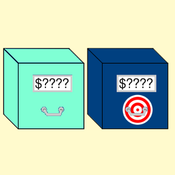

CPX
Porównanie liczby z rejestru X z liczbą z pamięci.
Opis

Operacja porównania liczb z rejestru X i z pamięci. Sprowadza się do ustawienia trzech flag: N, Z i C. Jakie przyjmą wartości, to zależy od warunków przedstawionych w poniższej tabelce.
Odpowiada to wyliczeniu wyrażenia warunkowego w instrukcji if wysokiego poziomu, jednak aby zasymulować warunkowe wykonanie bloku, należy użyć odpowiedniego rozkazu rozgałęzienia np. BCS.
Ten rozkaz różni się od rozkazu CPY jedynie rejestrem używanym do porównania.
Operacja wpływa na flagi: N, Z i C.
Wartości flag w zależności od warunku
| Warunek | N | Z | C |
|---|---|---|---|
| X < Pamięć | 1 | 0 | 0 |
| X = Pamięć | 0 | 1 | 1 |
| X > Pamięć | 0 | 0 | 1 |
Tabela opkodów
| Opkod | Tryb adresowania | Czas wykonywania (cykle) |
|---|---|---|
| $E0 |  | 2 |
| $E4 |  |
3 |
| $EC |  |
4 |